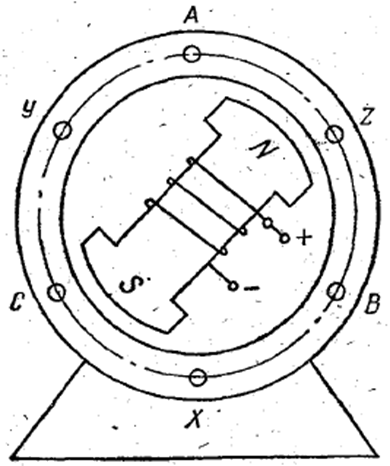
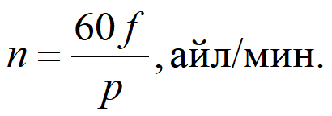
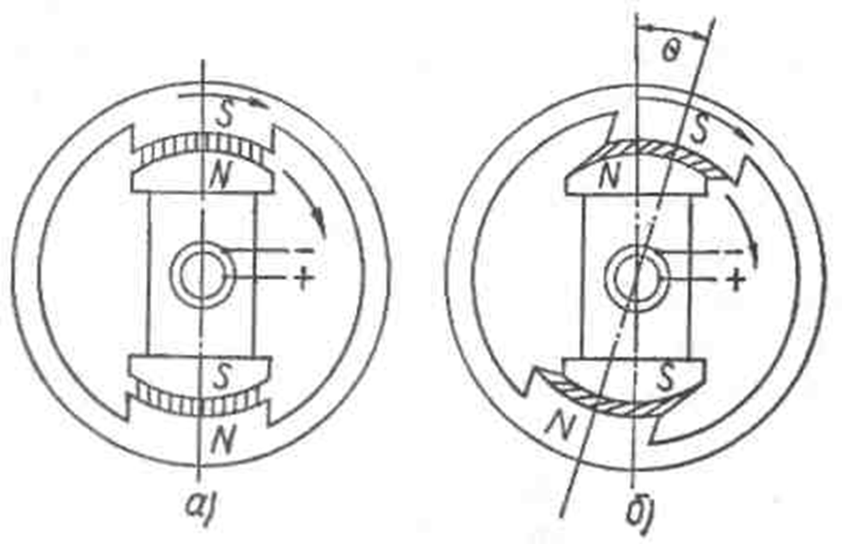
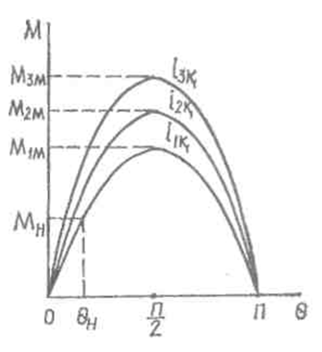
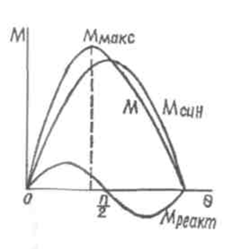
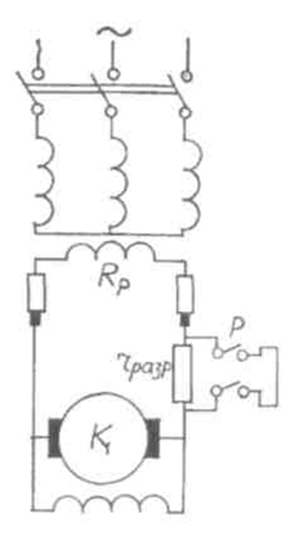
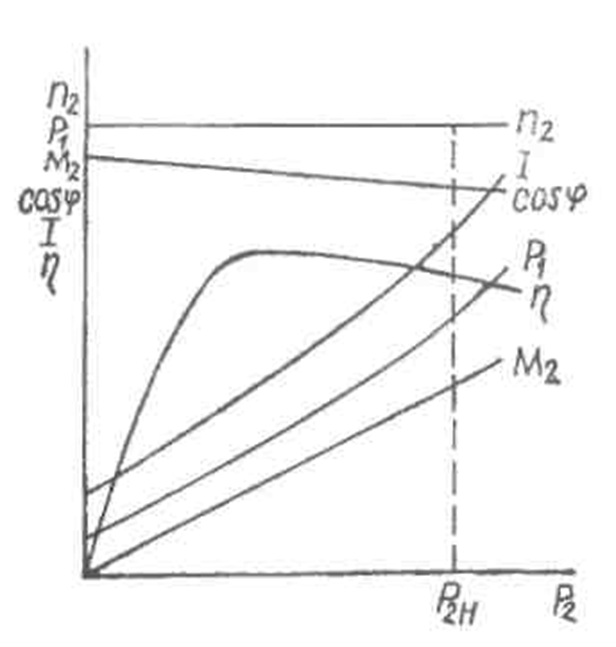

Режа:
1. Умумий тушунчалар.
1. Синхрон машиналарнинг ишлаш принципи.
2. Синхрон машинанинг тузилиши.
4. Синхрон генереторнинг тармоқ билан параллел ишлаши.
5. Синхрон машинанинг двигателнинг иш характеристикаси ва асосий солиштирма кўрсаткичлари.
Синхрон машиналар электр генераторлари, двигателлари ва реактив қувват компенсаторлари сифатида
ишлатилади. Барча Электр машиналари каби улар ҳам қайтувчанлик ҳусусиятига эга. Синхрон машиналар,
асосан, барча электр станцияларда ’ уч фазали электр генераторлари сифатида ишлатилмоқда.
Замонавий иссиқлик электр станцияларида қуввати 800 кВА ва ундан ортиқ бўлган генераторлар
ўрнатилган. Гидравлик электр станциялардаги генераторларнинг қуввати бирмунча кам бўлиб, 500 — 600 кВА
ни ташкил этади.
Атом электр станцияларида эса битта блокнинг қуввати 1.5 минг MBA га етади.
Роторнинг статордаги айланувчи магнит майдон частотасига тенг бўлган айланиш частотаси синхрон
частота деб, бундай матор эса синхрон матор деб аталади.
Машина ўқига маҳкамланган контакт ҳалқаларига ротор
чулғамининг икки учи маҳкамланган бўлиб, ҳалқалар сиртида қўзғалмас ток уловчи чўткалар сирпанади. Ротор
учун доимий ток манбаи сифатида қуввати унча катта бўлмаган ўзгармас ток генератори — уйғотгич
ишлатилади. Одатда, уйғотгичнинг қуввати синхрон машина қувватининг (1 - 3) % ини ташкил этади.

Узгармас ток машинаси сингари синхрон машина хам мотор ва генератор режимида ишлайди. Синхрон моторнинг
конструкцияси генераторникидан фарк килмайди.
Синхрон машинани мотор режимида ишлатиш учун унинг статор чулгамига уч фазали, ротор чулгамига эса
узгармас ток берилади.
Статор чулгамига берилган уч фазали токда айланувчи магнит майдон хосил булиб, унинг тезлиги
куйидагича булади.

бунда f-узгарувчан токнинг частотаси;
p-статор чулгамига берилган токдан хосил булган
магнит майдоннинг жуфт кутблар сони.

Расм-1. Синхрон моторнинг ишлаш принципи:
а-салт ишлаш; б-юклама режимлари.
Статордаги айланувчи магнит майдони билан ротордаги токнинг узаро таъсири натижасида электромагнит
момент хосил булади. Электомагнит моментнинг таъсирида мотор ротори статордаги айланувчи магнит майдон
йуналишида айлана бошлайди. Статордаги айланувчи магнит майдон N ёки S кутби ротор магнит майдонидаги
уларга тескари булган кутблари билан эластик занжир сингари богланишга эгалиги сабабли роторнинг айланиш
частотаси хам n=60f/p булади.
Мотор юкламаси ортиб бориши билан нинг киймати хам ортиб боради. Аммо юклама номинал ва ундан бир
оз катта кийматгача узгаришида хам моторнинг частотаси узгармас синхрон кийматга эга булиб колаверади.
Айлантирувчи моментнинг узгариши n=60f/p=const булгани туфайли синхрон моторнинг механик
характеристикаси абцисса укига параллел булган тугри чизик билан ифодаланади, яъни унинг частотаси
юкламага боглик булмайди. Синхрон мотор афзаллиги шундаки сosφ=1 ёки сosφ=0,8 билан ишлай олади.

3-расм. Синхрон моторнинг бурчак характеристикаси.

4-расм. Аён кутбли синхрон моторнинг бурчак характеристикаси.

5-расм. Синхрон моторни ишга тушириш схемаси.
Айлантирувчи момент узгариши билан n=60f/p=const булгани туфайли синхрон моторнинг механик
характеристикаси абсцисса укига параллел булган тугри чизик билан ифодаланади, яъни унинг частотаси
юкламага боглик булмайди.
Синхрон моторнинг ротори билан статори орасидаги хаво бушлиги асинхрон моторникига нисбатан каттарок
булганлиги сабабли синхрон мотор анча ишончлирок тузилишда булади. Синхрон моторнинг яна бир афзаллиги
шундаки, улар номинал режимда сosφ=1 ёки сosφ=0,8 билан ишлай олади. Натижада, синхрон мотор уланган
электр тармогидаги кувват коэффициентининг киймати катталашади.
n, P1, cosφ, I, η ва M2 қийматларнинг мотор валидаги фойдали қувват
Р2 га боғланишини ифодаловчи
графиклар синхрон моторнинг иш характеристикалари деб аталади.

Синхрон моторнинг иш характеристикалари.
n-мотор валидаги частота.
Унинг қиймати юкламага боғлиқ бўлмай, ўзгармас, яъни n=const бўлади:
Р1=P2+ΔP - моторга берилган қуввват бўлиб, қувват исрофи ΔР нинг чўлғамнинг
қизиши учун сарфланган
қисми юклама токининг квадратига пропарционаллиги учун Р1=f(P2) боғланиши эгри
чизиқ билан ифодаланади:
соsφ–қувват коэффициентининг қиймати бўлиб, юкламанинг купайиши билан бир озгина камаяди
I - статор чулғамидаги ток бўлиб, юклама купайиши билан соsφ бир оз камайгани учун унинг қиймати
Р1 га
нисбатан тезроқ ўзгаради.
η-фойдали иш коэффициенти, унинг энг юқори қиймати номинал юкламанинг (05+0,75)Pн қийматида содир
булади.
М2 = P2/ω – мотор валидаги айлантирувчи фойдали момент бўлиб, унинг қиймати
ω=const бўлгани учун Р2 га пропорционал равишда ўзгаради.